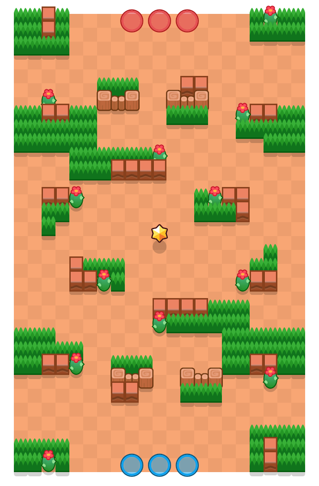

독버섯 함정(Deathcap Trap)

게임 모드
현재 상태
삭제
제작자
슈퍼셀
존재 기간
2017년 6월 15일 ~ 2019년 1월 29일
마지막 경쟁전 등장
알 수 없음
젬 그랩 "독버섯 함정"과 같은 구조를 띈 맵으로, 원래 젬 그랩의 이 맵은 "독버섯 동굴", 이 맵은 "독버섯 함정"으로, 베타 시절에는 각각 "버섯 동굴", "양배추 밭"이라는 이름을 갖고 있었으나 2019년 10월 업데이트로 젬 그랩 맵도 "독버섯 함정"이라는 이름을 사용하게 되었다. 젬 그랩 "독버섯 함정"은 한번도 삭제된 적 없는 개근 맵이나 이 맵은 2019년 1월 업데이트로 삭제되고 돌아오지 못한 비운의 맵이다.